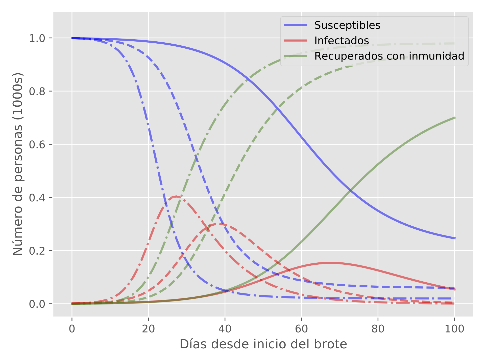

¿Qué es el modelo SIR?
Entender y predecir el comportamiento de una epidemia es una de las cosas que le interesa conocer a la epidemiología. Existen distintas estrategias para conseguir entender esto. Una en particular es mediante el modelo matemático determinista desarrollado originalmente por Kermack y McKendrick (1927), el cual consiste en asumir que el comportamiento de la población susceptible a contagio ($S$), infectada ($I$) y recuperada ($R$), está dado por el siguiente sistema de ecuaciones diferenciales ordinarias:
$$\begin{align}
\dfrac{dS}{dt} & = -\beta S I \\
\dfrac{dI}{dt} & = \beta S I - \lambda I \\
\dfrac{dR}{dt} & = \gamma I
\end{align}$$
donde $S + I + R = 1$. Estas ecuaciones representan el número de individuos por intervalo de tiempo en cada una de las poblaciones consideradas. El significado de cada parámetro corresponde a características particulares de la enfermedad:
- $\beta$ es la tasa de infección. Este parámetro nos indica la probabilidad de que una persona susceptibles resulte infectada.
- $\gamma$ es la tasa de recuperación. Este parámetro está dado por el tiempo promedio que tarda una persona en dejar de ser infecciosa y conseguir la inmunidad.
Encontrar la solución al sistema de ecuaciones mencionado equivale a calcular el cumulativo de nuevos casos de infectados y recuperados que aparecen diariamente.
Hay un parámetro en epidemiología que nos marca la dinámica de la enfermedad y está asociado al poder reproductivo de la enfermedad. Este parámetro se le conoce como el ritmo reproductivo básico, que para el modelo SIR está dado por:
$$R_0 = \frac{\beta}{\gamma},$$
Si $R_0 < 1$, la enfermedad muere después de un largo periodo. Si $R_0 > 1$, la infección puede llegar a propagarse ampliamente entre una población. El caso particular de $R_0 = 1$ indica que cada persona infectada va a contagiar a una sola persona
Evolución de una infección de acuerdo con el modelo SIR
Al resolver el sistema de ecuaciones descritos arriba, podemos estimar cómo será el comportamiento de la enfermedad en una población en particular a través de los días y predecir momentos clave de la infección. Como ejemplo tomaremos una población de 1000 individuos, de los cuales asumiremos que al día 0 tenemos 1 infectado.
Figura: Soluciones del modelo SIR para tres valores de $\beta$.
En este experimento hemos usado $\gamma = 10$ y $R_0 = 2, 3, 4$, que corresponden a $\beta = 0.2, 0.3, 0.4$ (líneas sólidas, discontinuas y de guiones y puntos, respectivamente). Las líneas de color rojo representan a la población de infectados. En este experimento hemos asumidos que los parámetros $\gamma$ y $R_0$ (o en su defecto $\beta$) son constantes en el tiempo.
Las etapas más importantes de la enfermedad vienen dados por las líneas rojas (individuos infectados). El punto máximo de estas líneas nos dicen cuál y cuándo será el máximo de infectados. El parámetro $\beta$, como hemos dicho antes, nos indica la probabilidad de un individuo sano pase a la población de infectados. Si, por ejemplo, un virus es altamente transmisible y desconocido como el SARS-CoV2, el valor de $\beta$ será alto si la población no toma medidas que reduzcan las probabilidades de entrar en contacto con el virus; en otras palabras, si no se quedan en casa.